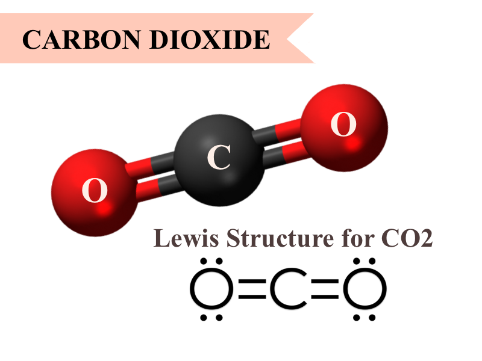
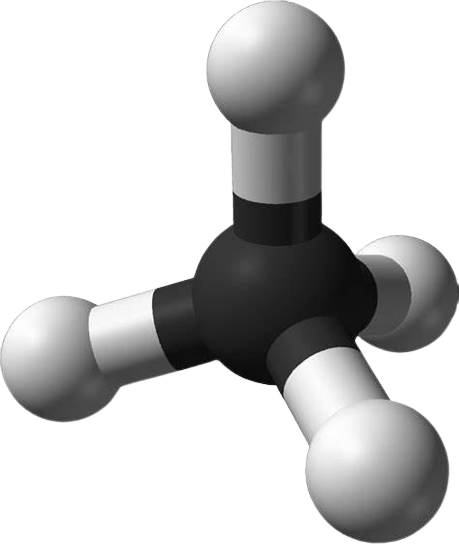
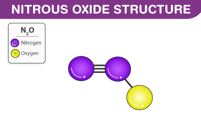
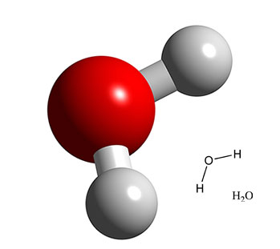
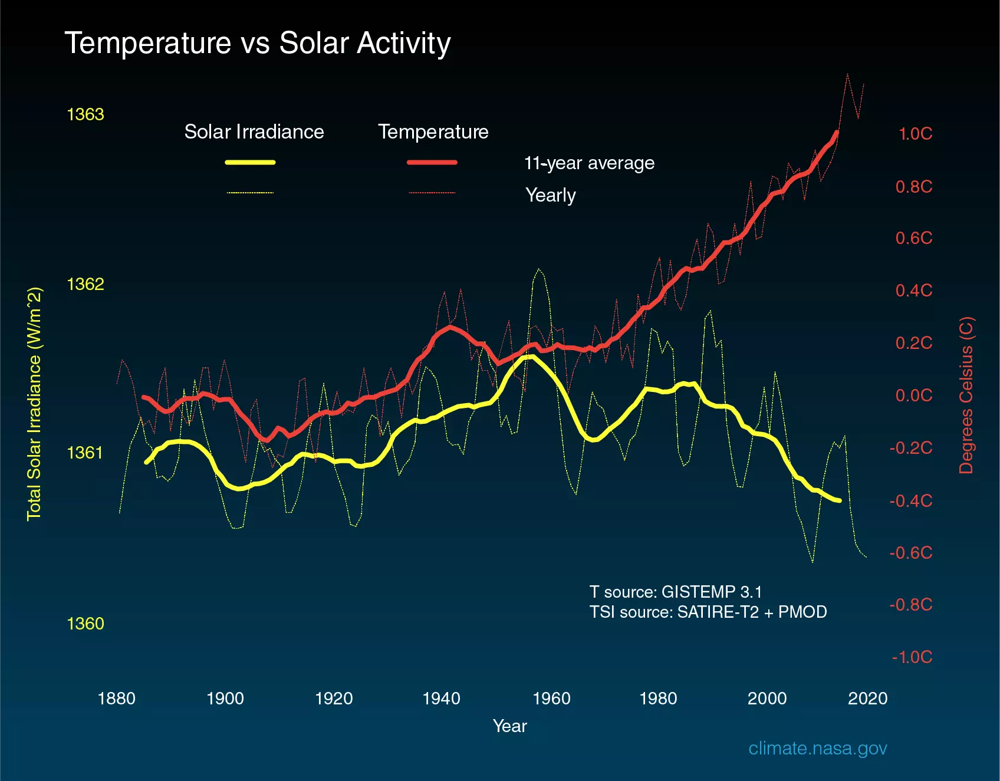

Scientists attribute the global warming trend observed since the mid-20th century to the human expansion of the "greenhouse effect" — warming that results when the atmosphere traps heat radiating from Earth toward space.
Life on Earth depends on energy coming from the Sun. About half the light energy reaching Earth's atmosphere passes through the air and clouds to the surface, where it is absorbed and radiated in the form of infrared heat. About 90% of this heat is then absorbed by greenhouse gases and re-radiated, slowing heat loss to space.
Four Major Gases That Contribute to the Greenhouse Effect:
FORCING: Something acting upon Earth's climate that causes a change in how energy flows through it (such as long-lasting, heat-trapping gases - also known as greenhouse gases). These gases slow outgoing heat in the atmosphere and cause the planet to warm.
- Carbon Dioxide
- Methane
- Nitrous Oxide
- Chlorofluorocarbons (CFCs)
1. Carbon Dioxide
A very important component of the atmosphere, carbon dioxide (CO2) is released through natural processes (like volcanic eruptions) and through human activities, like burning fossil fuels and deforestation. Human activities have increased the amount of CO2 in the atmosphere by 50% since the Industrial Revolution began (1750). This sharp rise in CO2 is the most important climate change driver over the last century.

2. Methane
Like many atmospheric gases, methane comes from both natural and human-caused sources. Methane comes from plant-matter breakdown in wetlands and is also released from landfills and rice farming. Livestock animals emit methane from their digestion and manure. Leaks from fossil fuel production and transportation are another major source of methane, and natural gas is 70% to 90% methane. As a single molecule, methane is a far more effective greenhouse gas than carbon dioxide but is much less common in the atmosphere. The amount of methane in our atmosphere has more than doubled since pre-industrial times.

3. Nitrous Oxide
A potent greenhouse gas produced by farming practices, nitrous oxide is released during commercial and organic fertilizer production and use. Nitrous oxide also comes from burning fossil fuels and burning vegetation and has increased by 18% in the last 100 years.

4. Chlorofluorocarbons (CFCs)
These chemical compounds do not exist in nature – they are entirely of industrial origin. They were used as refrigerants, solvents (a substance that dissolves others), and spray-can propellants. An international agreement, known as the Montreal Protocol, now regulates CFCs because they damage the ozone layer. Despite this, emissions of some types of CFCs spiked for about five years due to violations of the international agreement. Once members of the agreement called for immediate action and better enforcement, emissions dropped sharply starting in 2018.

1. Water Vapor
Water vapor is the most abundant greenhouse gas, but because the warming ocean increases the amount of it in our atmosphere, it is not a direct cause of climate change. Rather, as other forcings (like carbon dioxide) change global temperatures, water vapor in the atmosphere responds, amplifying climate change already in motion. Water vapor increases as Earth's climate warms. Clouds and precipitation (rain or snow) also respond to temperature changes and can be important feedback mechanisms as well.

Human Activity Is the Cause of Increased Greenhouse Gas Concentrations:
Over the last century, burning of fossil fuels like coal and oil has increased the concentration of atmospheric carbon dioxide (CO2). This increase happens because the coal or oil burning process combines carbon with oxygen in the air to make CO2. To a lesser extent, clearing of land for agriculture, industry, and other human activities has increased concentrations of greenhouse gases.
How do we know what greenhouse gas and temperature levels were in the distant past?
The industrial activities that our modern civilization depends upon have raised atmospheric carbon dioxide levels by nearly 50% since 1750. This increase is due to human activities, because scientists can see a distinctive isotopic fingerprint in the atmosphere.
In its Sixth Assessment Report, the Intergovernmental Panel on Climate Change, composed of scientific experts from countries all over the world, concluded that it is unequivocal that the increase of CO2, methane, and nitrous oxide in the atmosphere over the industrial era is the result of human activities and that human influence is the principal driver of many changes observed across the atmosphere, ocean, cryosphere and biosphere.
Evidence Shows That Current Global Warming Cannot Be Explained by Solar Irradiance:
Scientists use a metric called Total Solar Irradiance (TSI) to measure the changes in energy the Earth receives from the Sun. TSI incorporates the 11-year solar cycle and solar flares/storms from the Sun's surface.
Studies show that solar variability has played a role in past climate changes. For example, a decrease in solar activity coupled with increased volcanic activity helped trigger the Little Ice Age.

The above graph compares global surface temperature changes (red line) and the Sun's energy that Earth receives (yellow line) in watts (units of energy) per square meter since 1880. The lighter/thinner lines show the yearly levels while the heavier/thicker lines show the 11-year average trends. Eleven-year averages are used to reduce the year-to-year natural noise in the data, making the underlying trends more obvious.
The amount of solar energy that Earth receives has followed the Sun’s natural 11-year cycle of small ups and downs with no net increase since the 1950s. Over the same period, global temperature has risen markedly. It is therefore extremely unlikely that the Sun has caused the observed global temperature warming trend over the past half-century.
But several lines of evidence show that current global warming cannot be explained by changes in energy from the Sun:
Since 1750, the average amount of energy from the Sun either remained constant or increased slightly.
If a more active Sun caused the warming, scientists would expect warmer temperatures in all layers of the atmosphere. Instead, they have observed a cooling in the upper atmosphere and a warming at the surface and lower parts of the atmosphere. That's because greenhouse gases are slowing heat loss from the lower atmosphere..
Climate models that include solar irradiance changes can’t reproduce the observed temperature trend over the past century or more without including a rise in greenhouse gases.